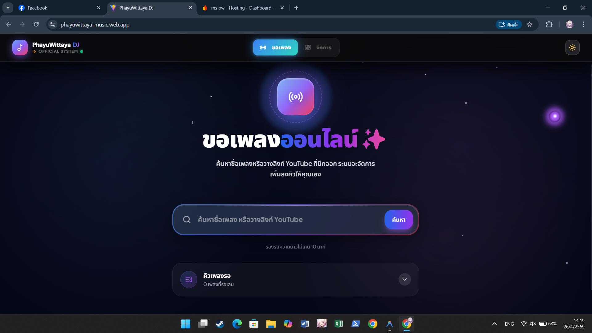
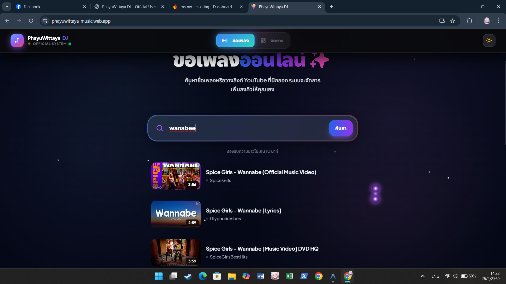
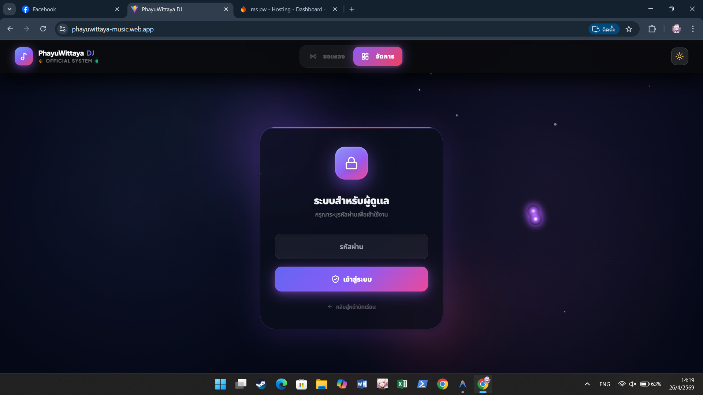
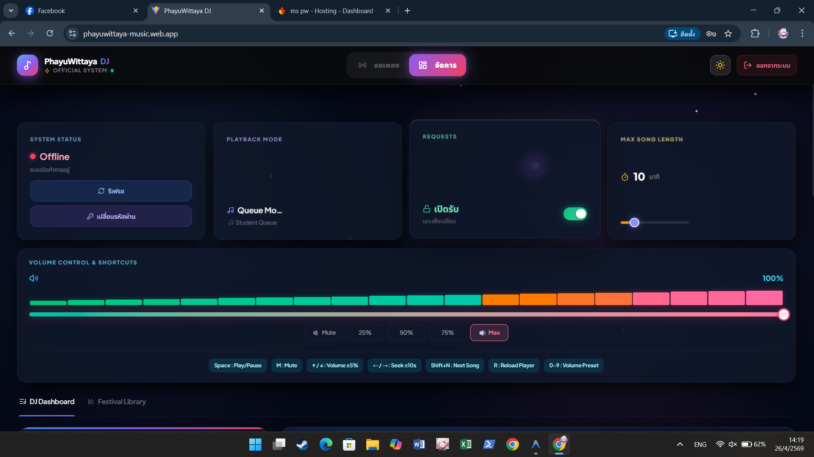
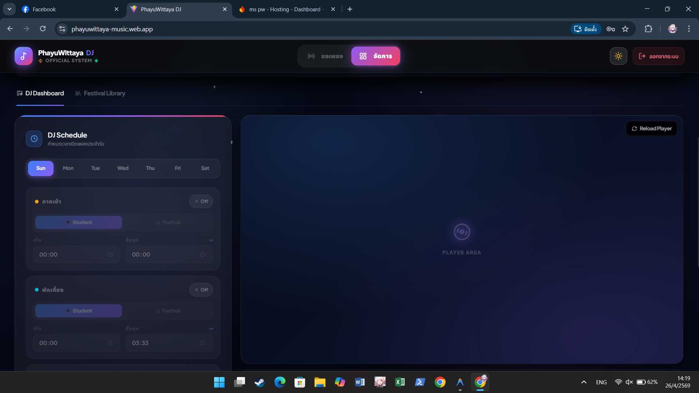
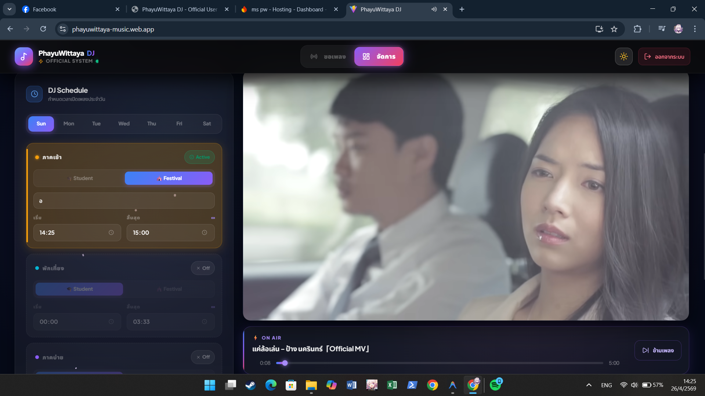
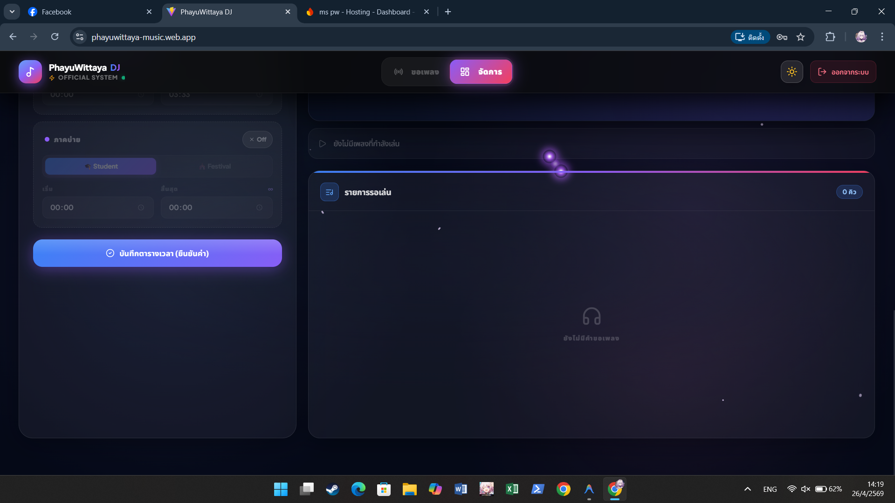
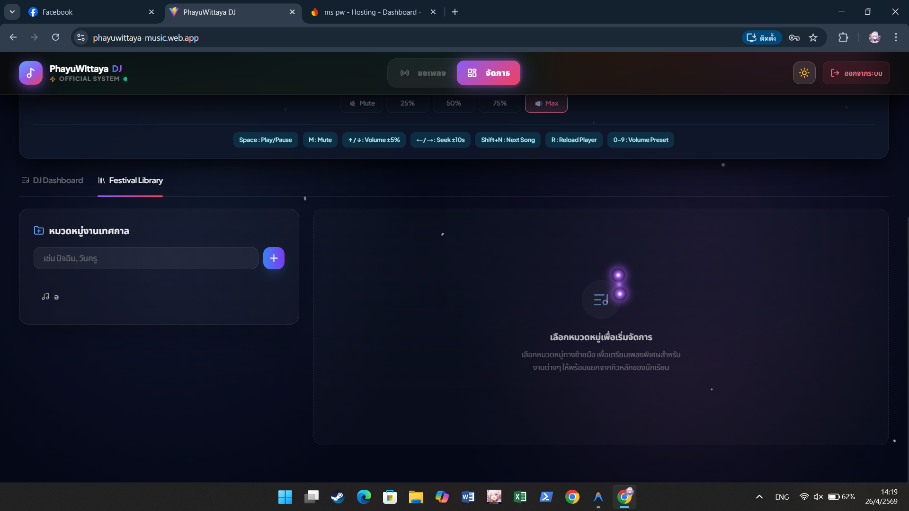
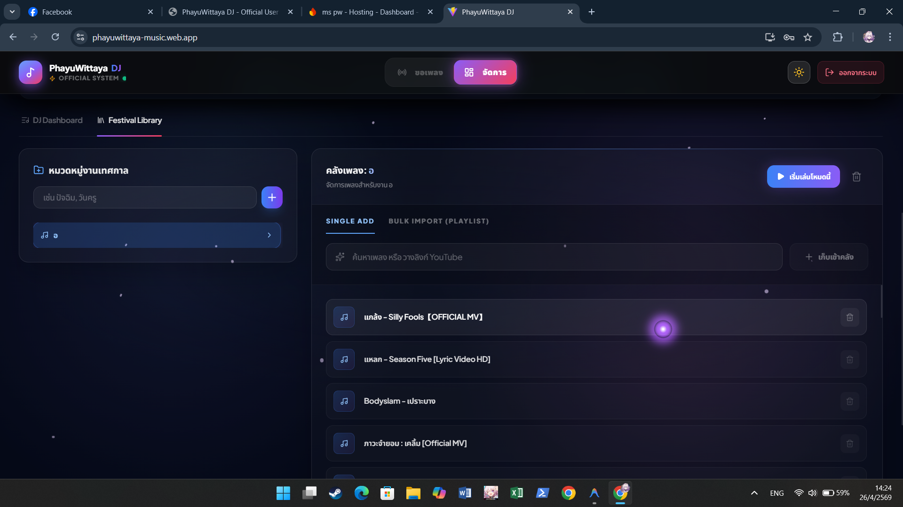

ระบบขอเพลงออนไลน์แบบเรียลไทม์ (Real-time Online Request System)
คู่มือผู้ใช้งานอย่างเป็นทางการ สำหรับนักเรียน และ ผู้จัดรายการ
คู่มือการใช้งานสำหรับนักเรียนและบุคลากรทั่วไป
เพื่อส่งคำขอเพลงเข้าสู่สถานีวิทยุของโรงเรียน
เข้าสู่หน้าต่าง "ขอเพลงออนไลน์" คุณสามารถเริ่มต้นได้ง่ายๆ:

เมื่อกดค้นหา (ตัวอย่าง: ค้นหาคำว่า "บางระจัน"):

ศูนย์รวมการควบคุมทิศทางสถานีวิทยุออนไลน์ (DJ Dashboard)
เครื่องมือครบครันสำหรับแอดมินในหน้าจอเดียว
ก่อนเข้าใช้งานแผงควบคุม (Dashboard) ต้องเข้าสู่ระบบก่อน:

ควบคุมทุกอย่างได้จากแถบเมนูด้านบนของ Dashboard:

จัดการการออกอากาศอัตโนมัติ ไม่ต้องกลัวเปิดทิ้งไว้:

เมื่อคุณต้องการเปิดเพลงเฉพาะกิจตามเทศกาลต่างๆ:

ส่วนล่างสุดคือ "รายการรอเล่น" (คิวเพลง):

สลับมาที่แถบเมนู Festival Library เพื่อจัดการเพลย์ลิสต์:

หลังจากสร้างหมวดหมู่ (เช่น "ปัจฉิม") คุณสามารถเพิ่มเพลงได้ 2 ช่องทาง:
